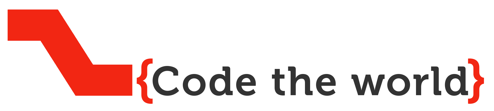
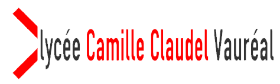
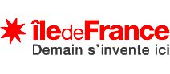

Histoire
Nous nous sommes formés en 2013 au lycée Camille Claudel de vauréal dans le cadre des TPE. Nous avons traité le sujet "En quoi la réaction du muscle est-elle différente en fonction de l'effort pratiqué?".
Nous avons choisi pour support un site internet et c'est en le codant que notre goût pour l'informatique s'est prononcé. Voici un lien vers notre site
Nous avons donc choisi comme spécialité pour la terminale ISN (Informatique et Sciences du Numérique) et nous avons continué à travailler ensemble autour de nos projets.
Identité visuelle
Au cours de notre existence nous avons eu 2 identitées visuelles:
Ce premier logo est une typographie simple qui se compose de 4 lettres TYLT rappelant les 4 prénoms des membres de notre groupe de TPE: Thaïvin, Yaël, Louis et Tom. La typo utilisé est FUTURA MT Bold et ces 4 lettres sont accompagnées du slogan "code the web" car nous ne développions que des sites webs. Les couleurs utilisées sont le jaune et le bleu. Ces deux couleurs sont vives flat design.
Lors de notre passage en ISN en Terminale nous n'étions plus que trois membres et nous avions besoin de changer notre logo pour redéfinir notre identité. Nous avons donc utilisé Museo Slab 700 comme typo car elle est moins brute et plus élégante tout en restant flat design. Pour le choix des couleurs, nous avons redéfini une identité plus sobre avec du gris foncé du rouge et du blanc. Nous utilison toujours TYLT comme non mais cela est désormais l'accronyme de Tom Yaël Louis Team. Le point d'exclamation a été supprimé afin d'épurer le logo. Nous avons changé notre slogan pour "code the world" car nous développons plus que des sites webs dorénavant.
Nous avons créé un logo plus simple et épuré représentant une forme géométrique basée sur la barre horiziontale du T, la diagonale du Y et La barre horizontale du L
Notre équipe
Nous sommes aujourd'hui une petite équipe composée de 3 membre: Tom, Yaël et Louis.
Voici une photo de notre groupe lors d'une expérience pendant nos TPE.
Notre équipe 2013-2014:
Notre équipe 2014-2015:
Découvrez nos projets
Pour notre premier projet nous avons voulu créer fauteuil roulant intelligent.
Cliquez pour en savoir plus

Projet Sade de KISIELA Tom RADOLANIRINA Yaël L'HARIDON Louis -TYLT {code the wold} est mis à disposition selon les termes de la licence Creative Commons Attribution - Pas d'Utilisation Commerciale - Pas de Modification 4.0 International
Introduction au projet
Dans le cadre de notre spécialité ISN, nous nous sommes réunis en un groupe de trois amis. Après quelques séances nous avons trouvé le thème de notre projet à partir d’une plaisanterie. Nous avons décidé d’améliorer le fauteuil roulant électrique de Yaël en l’automatisant. Nous avons donc débuté ce projet vers octobre. Nous avons réalisé 16 versions alpha et 3 betas, ainsi que 11 versions de tests divers. Constatant notre avancement rapide, notre professeur Mme Delattre nous proposa de participé à la finale académique des Olympiades des sciences de l’ingénieur. C’est avec une certaine appréhension mais néanmoins la volonté de réussir que nous avons accepté en axant notre production sur la composante principale de ce qui devait être notre projet d’automatisation d’un fauteuil roulant, le projet Sade. Ce dernier a pour but la création et l’adaptation à différents fauteuils roulants, d’un système de détection et d’esquive d’obstacle. Le principe est simple, le système équipé de huit capteurs (deux devant, deux à l’arrière, et deux de chaque côté, va détecter tout obstacle autour de lui et va, en fonction de leur proximité, rediriger le fauteuil pour esquiver ces obstacles. Mais par manque de moyens techniques et financiers, nous n’avons pas pu réaliser l’adaptation réelle et nous nous sommes donc contentés d’un prototype, un ShieldBot Arduinio 1.0. Cependant, sa puissance et l’espace disponible ne nous a permis de l’équiper que de deux capteurs et d’un module Bluetooth permettant une conduite à distance.
Présentation du projet
Nous avons donc appelé notre projet : Projet Sade (Système d’assistance à la Détection et à l’Esquive). L’enjeu de notre projet est avant tout de faciliter la vie des personnes en fauteuil roulant et de limiter le risque d’accident. Notre problématique est donc : Comment diminuer le risque d’accident durant un moment d’inattention ?
Ce besoin car existe l’utilisateur étant humain et ayant des rapports sociaux, il lui est difficile de ne se concentrer que sur sa conduite. Ce besoin pourrait disparaître grâce à la réhabilitation totale de l’environnement ou un remaniement génétique qui supprimerait les handicaps physiques, ce qui n’est pas envisageable pour le moment. Ce besoin est donc réel et notre projet doit répondre aux contraintes suivantes : Nous devons réussir à créer un système efficace d’esquive des obstacles, créer un système alternatif de commande pour fauteuil et nous devons également réussir à maintenir la sécurité de l’usager de notre système au cours de son utilisation.
Pour réaliser ce projet nous avons choisi de ne pas être trop influencés par des projets déjà existants afin d’avoir notre propre approche de la problématique. Nous avons cependant étudié les projets concernant l’esquive des obstacles sur différents véhicules et le travail effectué par les étudiants de l’université de Montpellier (projet Astar).
Nous rappelons que n’ayant pas les moyens financiers de travailler sur un vrai fauteuil roulant au début de notre projet nous avons choisi d’illustrer notre système sur un ShieldBot.
Le but visé est donc de créer un système d’esquive des obstacles qui permettrait, à l’aide de 8 capteurs ultrasons, de recalculer la trajectoire du fauteuil roulant en fonction de la distance de ces capteurs. Concrètement, sur le ShieldBot, nous recalculons la trajectoire en fonction de deux capteurs ultrasons.
Nous avons choisi deux modes de commandes pour le fauteuil : un manuel et un à distance avec un smartphone. Nous avons donc choisi de travailler avec une application Android afin de contrôler notre ShieldBot.
Pour la partie robotique de notre projet nous avons travaillé avec une carte arduino uno que nous avons codé en C++ à l’aide de l’IDE Arduino. Nous avons branché cette carte sur un Shieldbot 1.0. Pour l’application Android qui contrôle le robot nous avons d’abord choisi de travailler sur l’outil du MIT AppInventor ou nous ne gérions que l’algorithmique. Mais nous avons finalement créé une application en Java et XML sur l’IDE de Google Android Studio.
Nous avons travaillé sur différents projets Web
Ce site "CV"
Réalisé en HTML5, CSS3 et Js ce site CV est aux dernières normes Web. Son flat design permet une lecture agréable et une bonne expérience utilisateur. Responsive, il s'adapte à tous les écrans.
Le site de nos TPE
Egallement codé en HTML 5, ce site est aussi aux dernières normes web, que ce soit le Responsive Design ou même son esthétique flat design. Il est accessible en cliquant ici
Partenaires
Notre équipe travaille avec différents partenaires:

Il s'agit de notre lycée qui nous accueille et nous permet de travailler sur nos projets.
Il s'agit d'un lycée de Cergy qui fournit généreusement une partie du matériel qui nous est nécessaire pour nos projets. Nous tenons à remercier en particulier le chef de projet de l'établissement qui a donné son accord.

La région IDF propulse notre lycée et soutien l'innovation technologique en financant les projets inovants dans les établissements scolaires.